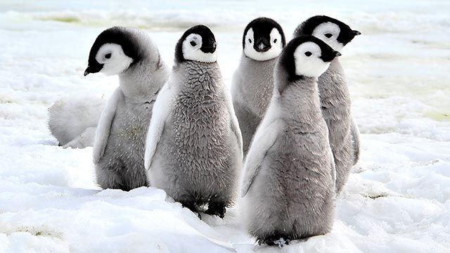
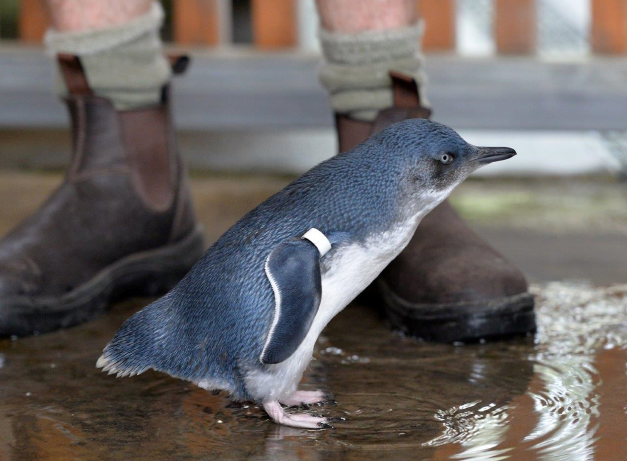
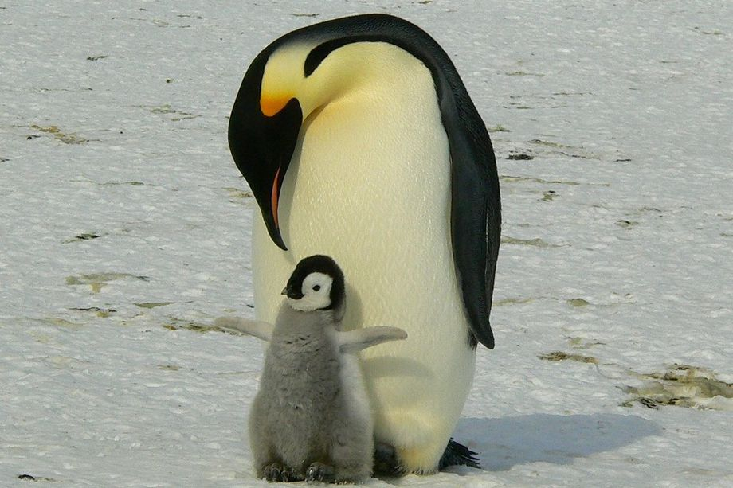

Hora actual:
Los pingüinos son aves adaptadas a la vida marina que sólo habitan en el hemisferio sur, con colonias en Sudáfrica, Sudamérica, Antártida, Australia y Nueva Zelanda. Las 18 especies actuales, especializadas en el buceo para alimentarse, surgieron entre 10 y 40 millones de años atrás a partir de un ancestro que era un ave voladora, aunque ninguna de las actuales puede hacerlo. Los registros muestran que el fósil más antiguo data de unos 55 millones de años.
Su tamaño puede ser muy variable, desde el Pingüino Azul de Australia y Nueva Zelanda, con sólo 30 cm de altura y un kilogramo de peso, hasta el Emperador, que vive en la Antártida y puede alcanzar hasta 1.40 metros de altura y 40 kg. Acorde a su pequeño tamaño, el Pingüino Azul bucea a poca profundidad, mientras que el Emperador puede alcanzar profundidades de hasta 500 m, para lo cual permanece sin respirar por 23 minutos.
Actualmente, los pingüinos poseen un estado de conservación particularmente frágil. De las 18 especies, 11 están consideradas como amenazadas o vulnerables por la Unión Internacional de la Conservación de la Naturaleza (IUCN, por su sigla en inglés) y 14 especies han sido elevadas a una categoría más severa de conservación en los últimos 24 años. Entre los principales problemas de conservación se encuentran el cambio climático, la contaminación marina, el mal manejo de las pesquerías comerciales, la degradación de su hábitat de reproducción, la introducción de depredadores y el disturbio humano.
| ¿Los pingüinos tienen plumas? | Aunque mucha gente no lo conoce, los pingüinos son aves que no vuelan pero que sí tienen plumas. Se trata de aves Sphenisciformes. |
|---|---|
| ¿El pingüino es un ave? | Los pingüinos nacen del huevo, tienen plumas y son aves oceánicas, palmípedas puesto que tienen patas palmeadas. |
| ¿Los pingüinos vuelan? | No. Aunque son aves, los pingüinos no vuelan. Se trata de una especie que perdió hace miles de años la capacidad de volar puesto que no era necesario para que pudieran mantenerse con vida. |
| ¿Los pingüinos son mamíferos? | Existen aproximadamente unas dieciocho especies de pingüinos, pero ninguna pertenece a los mamíferos. |